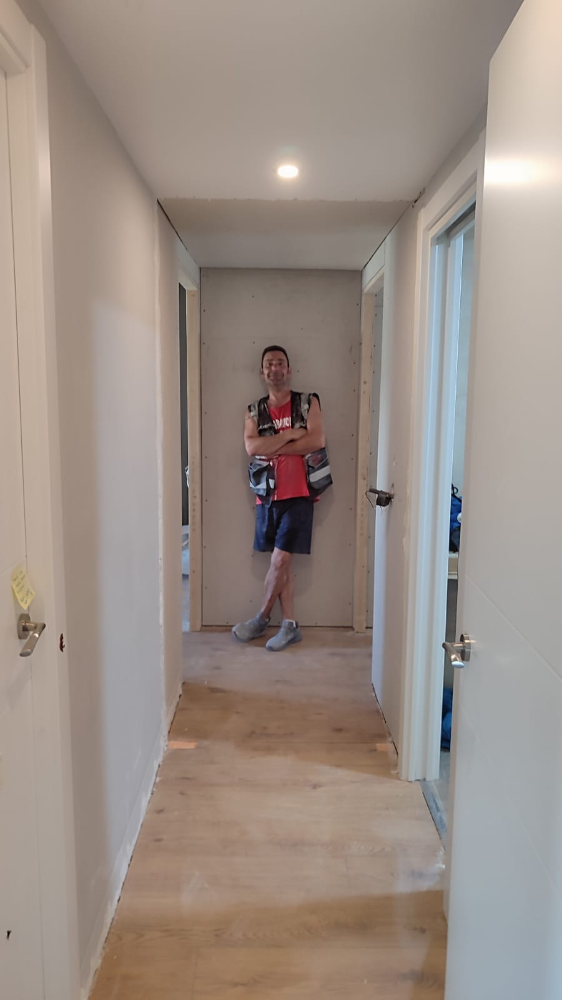

Tabiques de pladur
Distribuciones interiores, separaciones, cerramientos y cambios de espacio con estructura adecuada a cada necesidad.
Empresa especializada en pladur
Reformas La Campa ejecuta tabiques, techos, trasdosados, aislamiento y remates de pladur con planificacion, limpieza y precision en cada fase de obra.

Servicios
Trabajamos tanto intervenciones puntuales como reformas interiores completas, cuidando mediciones, encuentros, juntas y terminaciones.
Distribuciones interiores, separaciones, cerramientos y cambios de espacio con estructura adecuada a cada necesidad.
Falsos techos para iluminacion, instalaciones, regularizacion de alturas y acabado uniforme.
Mejora termica y acustica de estancias mediante soluciones adaptadas a vivienda, comercio u oficina.
Correccion de golpes, placas deterioradas, juntas, encuentros y detalles finales antes de pintura.

Forma de trabajar
Cada trabajo se plantea con una secuencia clara: proteger, ejecutar, revisar y entregar. El objetivo es que el cliente sepa que se va a hacer, cuanto tiempo requiere y como queda terminado.
Equipo
Un equipo pequeno permite comunicacion directa, control de calidad y decisiones rapidas en obra.
Medicion, montaje y ejecucion cuidada de estructura y placa.
Remates, ajustes finales y control visual del acabado.
Proceso
Revisamos medidas, estado del espacio, accesos e instalaciones afectadas.
Definimos alcance, materiales, tiempos estimados y condiciones de ejecucion.
Montaje ordenado, proteccion de la zona y seguimiento del acabado.
Revision final del trabajo y preparacion para pintura o siguiente fase.
Presupuesto
Envia una descripcion breve, medidas aproximadas y fotografias del espacio. Con esa informacion podremos orientar el presupuesto con mas precision.